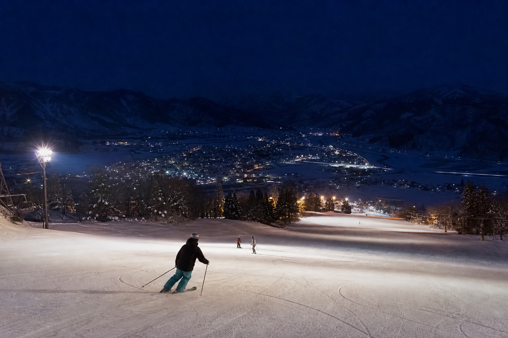
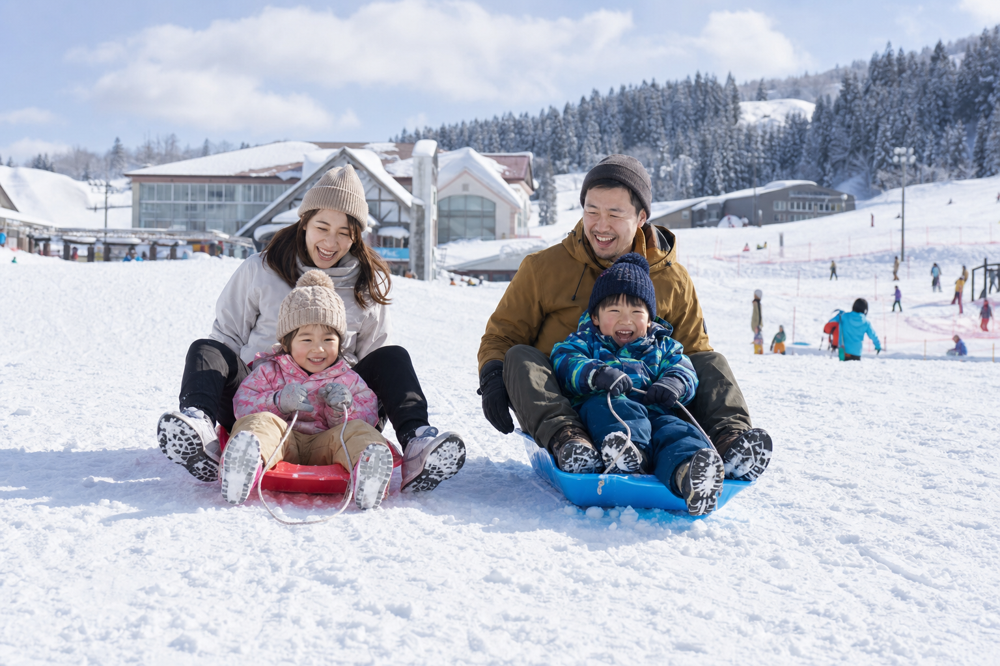

リフトなし × ロープトーだけの雪遊び
チェアリフトがないからこそ、初めての雪に恐怖心を与えない——ロープトーと緩斜面だけの「スノーデビューパーク」。急斜面の滑降より、雪だるま・ソリ・初めての板遊びを求める家族と初雪体験層に最適。
コース・雪遊びを見る島根県奥出雲町 · JR木次線
リフトが無いからこそ安全・安心！JR秘境駅から徒歩2分、温泉と出雲そばも満喫できる「雪遊び・スノーデビュー」の聖地。
ロープトーのみ 奥出雲 冬の欲張りパッケージ 駅徒歩2分更新 1/15 9:00
ロープトー
運行中
リフトなし · ロープトーのみ
斜面
緩斜面中心
標高700m超 · なだらかなゲレンデ
雪遊び
ソリ・初滑り
スノーデビュー向けゾーン
ビュー
奥出雲高原
木次線が雪原を走る景色
三井野原の魅力
チェアリフトがないからこそ、初めての雪に恐怖心を与えない——ロープトーと緩斜面だけの「スノーデビューパーク」。急斜面の滑降より、雪だるま・ソリ・初めての板遊びを求める家族と初雪体験層に最適。
コース・雪遊びを見るリフト設備を稼働させない自然地形の雪遊び場——カーボンニュートラルなスノーパークとして、安全で敷居の低い冬のアウトドア体験を提供する（レポート提言）。
スノーデビュー案内Winter Package
「ロープトー1日券＋ソリ・ウェアレンタル＋高原そば壱心でのランチ＋斐乃上温泉入浴券」をセットにした回遊チケット構想（LP案）。旅行前のオンライン決済で、エリア内の客単価を確実に押し上げる。
Day
ロープトー1日券
Set
雪遊び＋そば＋温泉セット
Hands-free Snow
ソリやウェアのレンタルをパッケージに組み込み——鉄道で来場する旅行者も、駅から徒歩2分で雪遊びを開始。車を使わない「スノートレインツーリズム」と相性の良い手ぶらモデル（LP案）。
各ドライブイン・旅館と連携した共通デジタルパス構想で、在庫と受け渡しをエリア全体で最適化。
手ぶら案内Evening Snow
標高700m超の高原で、日が沈むころの雪景色とローカル線——ゲレンデアプローチの線路横は、安全な観覧ゾーンを設けたフォトスポットとして整備する提言（レポート第7章）。
線路内立入禁止・公式撮影位置の明示など、JR西日本・地元警察との協議を前提とした運用設計。
雪景色・撮影案内

Snow Debut
リフトのない緩斜面——台湾や東南アジアからの「初雪体験」層にとって、急斜面の恐怖なく雪だるま・ソリ・軽い滑走を楽しめる安全なプレイグラウンド。「JR最高標高の秘境駅で体験する、初めての雪遊び」がコンセプト。
Snow · Soba · Onsen
ゲレンデ近くの「高原そば 壱心」で出雲そばを味わい、斐乃上温泉 斐乃上荘の美肌の湯でリカバリー——雪遊びと食・温泉を1日で回遊する奥出雲の定番モデル。
亀嵩温泉・佐白温泉など、仁多郡の秘湯めぐりとも組み合わせやすい立地。
温泉・そばルートTrain Trip
松江・出雲・広島方面からJR木次線で三井野原へ——雪道運転に不安のある旅行者を、鉄道経由で安全にゲレンデまで誘導する「スノートレインツーリズム」モデル（LP案）。
TRAIN · SNOW · ONSEN01
JR木次線で三井野原
松江・出雲・広島方面からローカル線で高原へ
02
駅から徒歩2分
三井野原駅からゲレンデへ——車不要の希少立地
03
ロープトー＆雪遊び
リフトなしの緩斜面でスノーデビュー
04
高原そば 壱心
ランチは出雲そばの名店で温まる
05
斐乃上温泉
美肌の湯で一日の疲れを癒す
Access
JR木次線「三井野原駅」から徒歩約2分
TEL 0854-54-2260（奥出雲町観光協会） · 施設情報は公式・観光協会サイト参照
リフトが無いからこそ安全・安心！JR秘境駅から徒歩2分、温泉と出雲そばも満喫できる「雪遊び・スノーデビュー」の聖地。
山口宇部空港でレンタカー予約スカイチケット（外部サイト）
三井野原スキー場周辺のドライブ向け